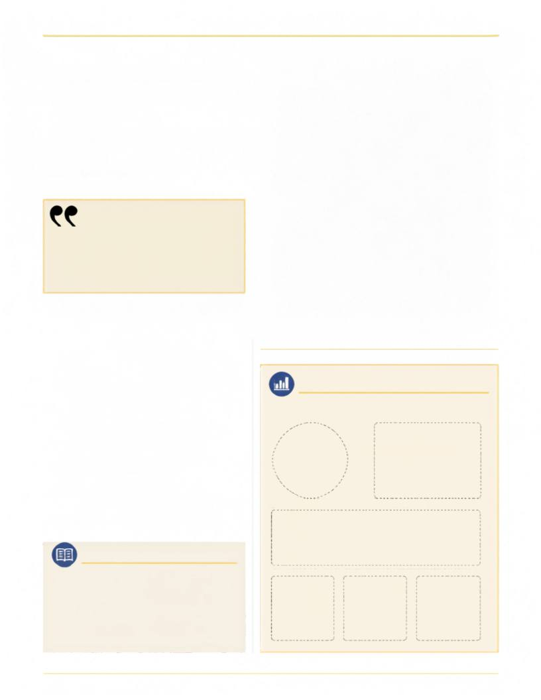

Intervenções ou
Golpes?
Por quê o CRTR-SP, o maior regional de
Radiologia do Brasil, vem sofrendo tantas
intervenções pelo CONTER desde 2017?
Knowledge illuminates paths.
Radiology reveals what the
eyes cannot see and strengthens
the care that transforms lives.
Image caption goes here, highlighting the connection between
Radiology, history and the progress of Brazil.
Radiology in Historical Perspective ...............................................
Key Milestones and Pioneers ..............................................
Innovation and Technology ..............................................
Education and Professional Training ..............................................
Radiology and Public Health ..............................................
Looking Ahead: Challenges and Opportunities ..............................................
RADIOLOGY IN BRAZIL: A LIVING LEGACY
ALÉM DA IMAGEM - CORES SP - CATR-SP
n. 1822, Brazil declared its independence and began
writing its own history. Since then, the country has
faced challenges, overcome obstacles and built a rich
heritage in science and healthcare. Radiology has been
an essential part of this journey—advancing with
technology, training professionals and contributing to
the quality of care for millions of Brazilians.
From the first X-ray images captured in the early days
of medical practice to the sophisticated digital systems
and artificial intelligence tools of today, the specialty
has constantly evolved to meet the needs of society
and support clinical decisions.
This cover story celebrates more than two centuries of
the nation's history and the path of Radiology in
Brazil.
A
story
of
dedication,
innovation
and
collaboration that continues to build the future.
Editorial area for infographic or key data
36
38
40
42
44
46
IN THIS STORY
CAPA
32
32
n. 1822, Brazil declared its independence and began writing its own
history. Since then, the country has faced challenges, overcome
obstacles and built a rich heritage in science and healthcare. Radiology
has been an essential part of this journey—advancing with technology,
training professionals and contributing to the quality of care for
millions of Brazilians.
From the first X-ray images captured in the early days of medical
practice to the sophisticated digital systems and artificial intelligence
tools of today, the specialty has constantly evolved to meet the needs of
society and support clinical decisions.
This cover story celebrates more than two centuries of the nation's
history and the path of Radiology in Brazil. A story of dedication,
innovation and collaboration that continues to build the future.
This cover story celebrates more than two centuries of the nation's
history and the path of Radiology in Brazil. A story of dedication,
innovation and collaboration that continues to build the future.